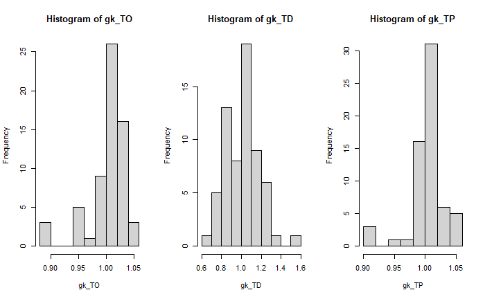
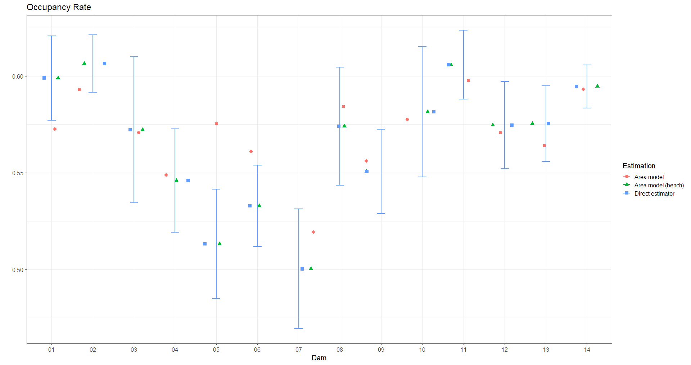
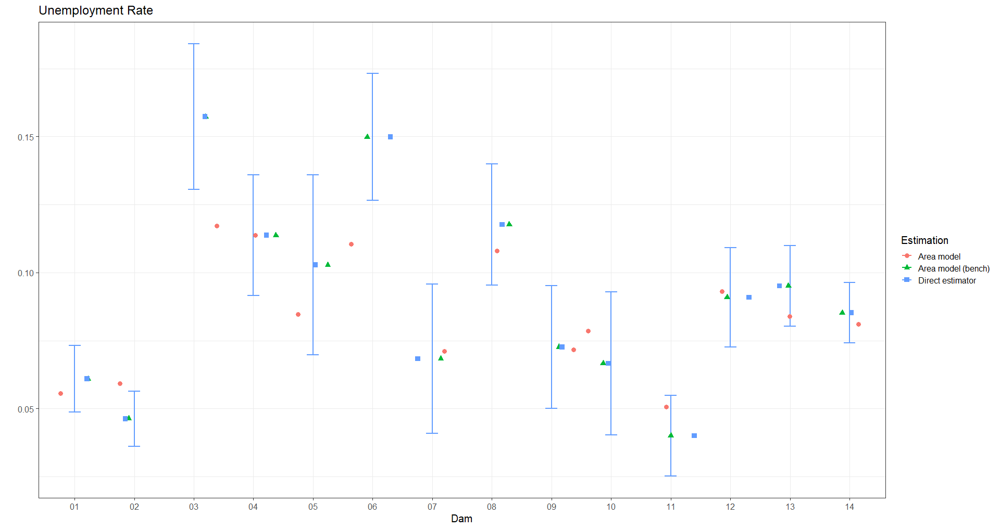
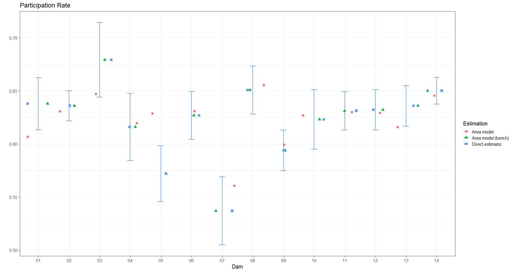

4.10 Metodología de Benchmarking
- People counts aggregated by dam2, people over 15 years of age.
conteo_pp_dam <- readRDS("Recursos/05_Empleo/12_censo_mrp.rds") %>%
filter(age > 1) %>%
mutate(dam = str_sub(dam2,1,2)) %>%
group_by(dam, dam2) %>%
summarise(pp_dam2 = sum(n),.groups = "drop") %>%
group_by(dam) %>%
mutate(pp_dam = sum(pp_dam2))
head(conteo_pp_dam) %>% tba()| dam | dam2 | pp_dam2 | pp_dam |
|---|---|---|---|
| 01 | 0101 | 26282 | 64195 |
| 01 | 0102 | 19385 | 64195 |
| 01 | 0103 | 18272 | 64195 |
| 01 | 0198 | 256 | 64195 |
| 02 | 0201 | 44833 | 443954 |
| 02 | 0202 | 35177 | 443954 |
- Estimation of the
thetaparameter at the level that the survey is representative.
indicador_agregado <-
diseno %>%
mutate(dam = str_sub(dam2,1,2)) %>%
group_by(dam) %>%
filter(empleo %in% c(3:5)) %>%
summarise(
TO = survey_mean(empleo == 3,
vartype = c("se", "cv")),
TD = survey_ratio(empleo == 4,
empleo != 5,
vartype = c("se", "cv")),
TP = survey_mean(empleo != 5,
vartype = c("se", "cv"))
) %>% select(dam,TO,TD, TP)
tba(indicador_agregado)| dam | TO | TD | TP |
|---|---|---|---|
| 01 | 0.5990 | 0.0609 | 0.6378 |
| 02 | 0.6065 | 0.0462 | 0.6359 |
| 03 | 0.5722 | 0.1573 | 0.6790 |
| 04 | 0.5459 | 0.1137 | 0.6160 |
| 05 | 0.5132 | 0.1029 | 0.5720 |
| 06 | 0.5328 | 0.1499 | 0.6267 |
| 07 | 0.5003 | 0.0683 | 0.5369 |
| 08 | 0.5741 | 0.1177 | 0.6506 |
| 09 | 0.5506 | 0.0726 | 0.5938 |
| 10 | 0.5815 | 0.0666 | 0.6230 |
| 11 | 0.6059 | 0.0400 | 0.6311 |
| 12 | 0.5746 | 0.0909 | 0.6320 |
| 13 | 0.5753 | 0.0951 | 0.6358 |
| 14 | 0.5946 | 0.0852 | 0.6500 |
Organizing the output as a vector.
temp <-
gather(indicador_agregado, key = "agregado",
value = "estimacion", -dam) %>%
mutate(nombre = paste0("dam_", dam,"_", agregado))
Razon_empleo <- setNames(temp$estimacion, temp$nombre)- Define the weights by domains.
names_cov <- "dam"
estimaciones_mod <- estimaciones %>%
transmute(
dam = str_sub(dam2,1,2),
dam2,
TO_mod,TD_mod,TP_mod) %>%
inner_join(conteo_pp_dam ) %>%
mutate(wi = pp_dam2/pp_dam)- Create dummy variables
estimaciones_mod %<>%
fastDummies::dummy_cols(select_columns = names_cov,
remove_selected_columns = FALSE)
Xdummy <- estimaciones_mod %>% select(matches("dam_")) %>%
mutate_at(vars(matches("_\\d")) ,
list(TO = function(x) x*estimaciones_mod$TO_mod,
TD = function(x) x*estimaciones_mod$TD_mod,
TP = function(x) x*estimaciones_mod$TP_mod)) %>%
select((matches("TO|TD|TP")))
# head(Xdummy) %>% tba()Some validations carried out
colnames(Xdummy) == names(Razon_empleo)
data.frame(Modelo = colSums(Xdummy*estimaciones_mod$wi),
Estimacion_encuesta = Razon_empleo)- Calculate the weight for each level of the variable.
Occupancy Rate
library(sampling)
names_ocupado <- grep(pattern = "TO", x = colnames(Xdummy),value = TRUE)
gk_TO <- calib(Xs = Xdummy[,names_ocupado],
d = estimaciones_mod$wi,
total = Razon_empleo[names_ocupado],
method="logit",max_iter = 5000,)
checkcalibration(Xs = Xdummy[,names_ocupado],
d =estimaciones_mod$wi,
total = Razon_empleo[names_ocupado],
g = gk_TO)Unemployment Rate
names_descupados <- grep(pattern = "TD", x = colnames(Xdummy),value = TRUE)
gk_TD <- calib(Xs = Xdummy[,names_descupados],
d = estimaciones_mod$wi,
total = Razon_empleo[names_descupados],
method="logit",max_iter = 5000,)
checkcalibration(Xs = Xdummy[,names_descupados],
d =estimaciones_mod$wi,
total = Razon_empleo[names_descupados],
g = gk_TD)Participation Rate
names_inactivo <- grep(pattern = "TP", x = colnames(Xdummy),value = TRUE)
gk_TP <- calib(Xs = Xdummy[,names_inactivo],
d = estimaciones_mod$wi,
total = Razon_empleo[names_inactivo],
method="logit",max_iter = 5000,)
checkcalibration(Xs = Xdummy[,names_inactivo],
d =estimaciones_mod$wi,
total = Razon_empleo[names_inactivo],
g = gk_TP)- Validate the results obtained.

- Estimates adjusted by the weighter
estimacionesBench <- estimaciones_mod %>%
mutate(gk_TO, gk_TD, gk_TP) %>%
transmute(
dam,dam2,
wi,gk_TO, gk_TD, gk_TP,
TO_Bench = TO_mod*gk_TO,
TD_Bench = TD_mod*gk_TD,
TP_Bench = TP_mod*gk_TP
) - Validation of results.
tabla_validar <- estimacionesBench %>%
group_by(dam) %>%
summarise(TO_Bench = sum(wi*TO_Bench),
TD_Bench = sum(wi*TD_Bench),
TP_Bench = sum(wi*TP_Bench)) %>%
inner_join(indicador_agregado)
tabla_validar %>% tba()| dam | TO_Bench | TD_Bench | TP_Bench | TO | TD | TP |
|---|---|---|---|---|---|---|
| 01 | 0.5990 | 0.0609 | 0.6378 | 0.5990 | 0.0609 | 0.6378 |
| 02 | 0.6065 | 0.0462 | 0.6359 | 0.6065 | 0.0462 | 0.6359 |
| 03 | 0.5722 | 0.1573 | 0.6790 | 0.5722 | 0.1573 | 0.6790 |
| 04 | 0.5459 | 0.1137 | 0.6160 | 0.5459 | 0.1137 | 0.6160 |
| 05 | 0.5132 | 0.1029 | 0.5720 | 0.5132 | 0.1029 | 0.5720 |
| 06 | 0.5328 | 0.1499 | 0.6267 | 0.5328 | 0.1499 | 0.6267 |
| 07 | 0.5003 | 0.0683 | 0.5369 | 0.5003 | 0.0683 | 0.5369 |
| 08 | 0.5741 | 0.1177 | 0.6506 | 0.5741 | 0.1177 | 0.6506 |
| 09 | 0.5506 | 0.0726 | 0.5938 | 0.5506 | 0.0726 | 0.5938 |
| 10 | 0.5815 | 0.0666 | 0.6230 | 0.5815 | 0.0666 | 0.6230 |
| 11 | 0.6059 | 0.0400 | 0.6311 | 0.6059 | 0.0400 | 0.6311 |
| 12 | 0.5746 | 0.0909 | 0.6320 | 0.5746 | 0.0909 | 0.6320 |
| 13 | 0.5753 | 0.0951 | 0.6358 | 0.5753 | 0.0951 | 0.6358 |
| 14 | 0.5946 | 0.0852 | 0.6500 | 0.5946 | 0.0852 | 0.6500 |
- Save results
4.10.1 Grafico de validación del Benchmarking
- Perform model estimates before and after Benchmarking
estimaciones_agregada <- estimaciones %>%
group_by(dam) %>%
summarise(
TO_mod = sum(wi * TO_mod),
TD_mod = sum(wi * TD_mod),
TP_mod = sum(wi * TP_mod),
TO_bench = sum(wi * TO_Bench),
TD_bench = sum(wi * TD_Bench),
TP_bench = sum(wi * TP_Bench))- Obtain the confidence intervals for the direct estimates
indicador_agregado <-
diseno %>%
mutate(dam = str_sub(dam2,1,2)) %>%
group_by(dam) %>%
filter(empleo %in% c(3:5)) %>%
summarise(
nd = unweighted(n()),
TO = survey_mean(empleo == 3,
vartype = c("ci")),
TD = survey_ratio(empleo == 4,
empleo != 5,
vartype = c("ci")),
TP = survey_mean(empleo != 5,
vartype = c("ci"))
)
data_plot <- left_join(estimaciones_agregada, indicador_agregado)- Select the results for an indicator (Occupancy rate)
temp_TO <- data_plot %>% select(dam,nd, starts_with("TO"))
temp_TO_1 <- temp_TO %>% select(-TO_low, -TO_upp) %>%
gather(key = "Estimacion",value = "value", -nd,-dam) %>%
mutate(Estimacion = case_when(Estimacion == "TO_mod" ~ "Area model",
Estimacion == "TO_bench" ~ "Area model (bench)",
Estimacion == "TO"~ "Direct estimator"))
lims_IC_ocupado <- temp_TO %>%
select(dam,nd,value = TO,TO_low, TO_upp) %>%
mutate(Estimacion = "Direct estimator")- Make the graph
p_TO <- ggplot(temp_TO_1,
aes(
x = fct_reorder2(dam, dam, nd),
y = value,
shape = Estimacion,
color = Estimacion
)) +
geom_errorbar(
data = lims_IC_ocupado,
aes(ymin = TO_low ,
ymax = TO_upp, x = dam),
width = 0.2,
linewidth = 1
) +
geom_jitter(size = 3) +
labs(x = "Dam", title = "Occupancy Rate", y = "",
color= "Estimation", shape = "Estimation")
- Repeat the process with the other indicators.
 